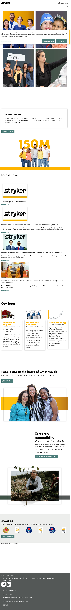
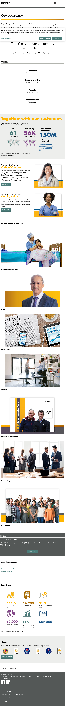
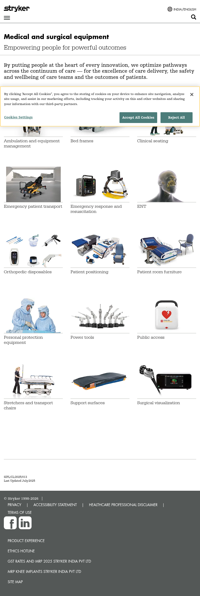
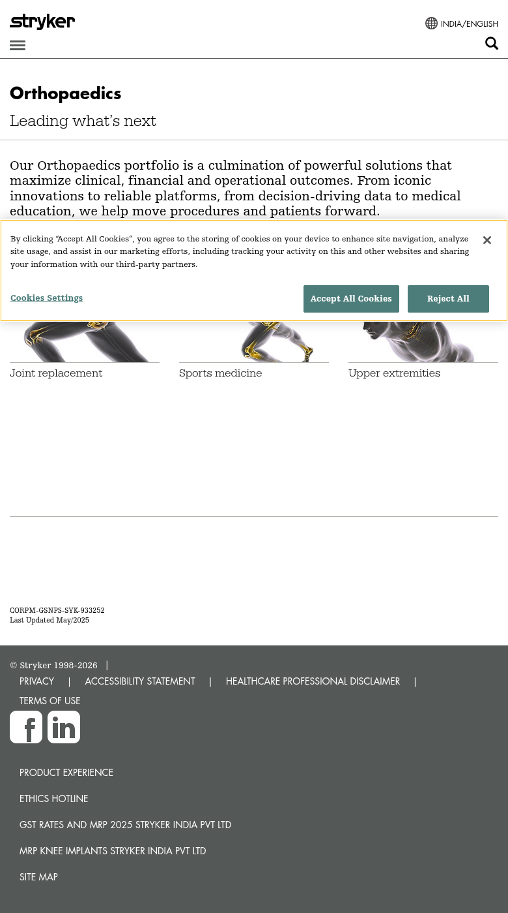
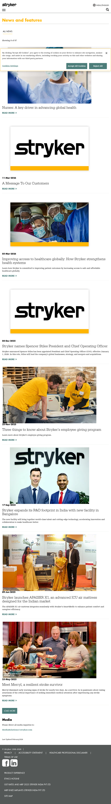
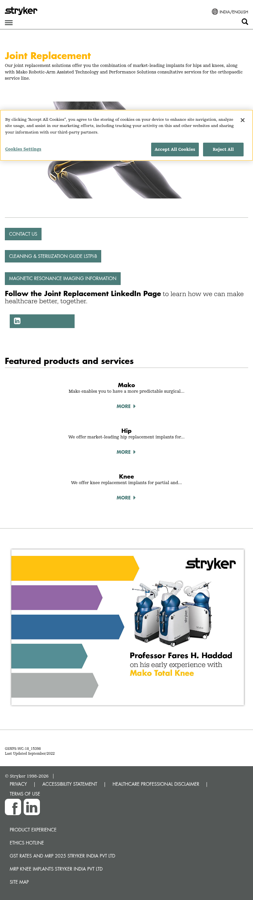

The Stryker India site (stryker.com/in/en/) is a reduced-scope regional locale of the global Stryker AEM platform. It shares identical infrastructure, CMS templates, and marketing/analytics integrations with the US site (/us/en/), but operates with significantly fewer content pages, a simplified navigation structure, and India-specific regulatory content (GST/MRP pricing documents).
| Dimension | India (in/en) | US (us/en) |
|---|---|---|
| Primary Nav Items | 4 (About, MedSurg, Orthopaedics, Neurotechnology) | 7 (About, Portfolios, Services, Care Settings, Patients, Training, Careers) |
| Business Units in Nav | 2 (MedSurg, Orthopaedics + Neurotechnology) | 20+ divisions with sub-menus |
| MedSurg Product Categories | 15 categories | 46+ categories |
| Orthopaedics Sub-categories | 3 (Joint Replacement, Sports Medicine, Upper Extremities) | 6+ categories |
| News Articles | 87 articles | 300+ articles |
| Footer Social Links | 2 (Facebook, LinkedIn) | 4 (Facebook, LinkedIn, Instagram, YouTube) |
| India-Specific Content | GST Rates/MRP PDFs, India regulatory disclaimers | N/A |
| Missing Sections (vs US) | Services/Solutions, Care Settings, Patients, Training/Education, Careers | Full scope |
| Endoscopy Section | Returns 404 | Full product catalog |
The India site uses the same AEM template architecture as the global platform. Seven distinct templates were identified through page-level analysis. All templates are shared with the US locale—no India-specific template customizations exist.
| # | Template Name | AEM Template ID | Description | India Usage | Reuse from US |
|---|---|---|---|---|---|
| 1 | Tier-1 Landing | tier1-landing |
Full-width hero, mission/values, fast facts, awards carousel. Used for homepage and About page. | Homepage, About page | 100% – identical template |
| 2 | Portfolio Listing | portfolio |
Category grid with product image cards. Headline + sub-headline + horizontal rule + descriptive paragraph + product grid. | MedSurg, Orthopaedics, Neurotechnology portfolio pages | 100% – same layout, fewer cards |
| 3 | Product Category | base |
Individual product category pages within portfolios (e.g., Bed Frames, Power Tools). | 15+ MedSurg sub-pages, 3+ Orthopaedics sub-pages | 100% – identical template |
| 4 | Business Unit Landing | tier1-landing (variant) |
Hero banner with featured products/services list + social CTA. Used for Joint Replacement, Neurovascular. | Joint Replacement page, Neurovascular page | 100% – same template variant |
| 5 | News Listing | base (variant) |
Paginated news listing with category filter, sidebar with media contacts. "Load More" pagination. | News & Features page (87 articles) | 100% – identical component |
| 6 | News Article | base |
Individual news/feature article pages with date, headline, body copy, and images. | 87 individual news articles | 100% – identical template |
| 7 | Legal / Informational | base |
Text-heavy informational pages for legal content (Privacy, Terms of Use, Accessibility, etc.). | Privacy, Terms of Use, Accessibility, Surgeon Disclaimer | 100% – identical template |
18 blocks/components were identified across the India site. These are a subset of the 22 found on the US site, with all components being identical in structure and behavior.
| # | Component | EDS Block Name | Description | India Notes |
|---|---|---|---|---|
| 1 | Global Header | header |
Logo, hamburger menu, locale selector (India/English), search icon. Sticky on scroll. | 4 nav items (vs 7 US). Locale shows "INDIA/ENGLISH". |
| 2 | Global Footer | footer |
Copyright, legal links, social icons, regulatory links. | 2 social links (Facebook, LinkedIn). India-specific: GST Rates PDF, MRP Knee Implants PDF, Product Experience link. |
| 3 | Cookie Consent Banner | N/A (OneTrust) | GDPR/privacy cookie consent dialog via OneTrust. | Same domain ID as US: d75729a5-75c8-4a38-8aae-707548537e37 |
| 4 | Locale Selector | locale-selector |
Globe icon with country/language picker. Redirects to locale-specific path. | Links to 74 hreflang locales (same as US). |
| 5 | Search Overlay | search |
Full-screen search overlay triggered by search icon. Uses server-side search API. | Search path uses /in/en/ prefix for results. |
| # | Component | EDS Block Name | Description | Complexity |
|---|---|---|---|---|
| 6 | Hero Banner (Full-width) | hero |
Large heading with animated text ("Our company"), background image or color, descriptive paragraph below. | Medium |
| 7 | Mission Statement | text-block |
Centered text block with animated line-by-line reveal. "Together with our customers, we are driven to make healthcare better." | Low |
| 8 | Values Grid | cards |
4-column grid: Integrity, Accountability, People, Performance. Each with title and subtitle. | Low |
| 9 | Statistics / Fast Facts | stats |
Icon + large number + description. Used for "61 countries", "56K employees", "$22.6B sales", etc. | Medium |
| 10 | Info Card (Side-by-side) | cards-horizontal |
Image left/right + heading + body text + CTA link. Used for Code of Conduct, Quality Policy sections. | Medium |
| 11 | Teaser Grid | cards (variant) |
3-4 column grid of image + title cards. Links to sub-pages. Used for "Learn more about us", portfolio product grids. | Low |
| 12 | Portfolio Product Grid | cards (variant) |
Product category cards with images. 3-column layout for portfolio listing pages. | Low |
| 13 | Timeline / History | timeline |
Historical timeline with dates and descriptions. Expandable "Learn More" link. | Medium |
| 14 | Awards Carousel | carousel |
Horizontal scrollable award badges (Great Place to Work, Best Workplaces, etc.). | Medium |
| 15 | News Article Card | news-list |
Thumbnail + date + headline + excerpt + "Read More" link. Paginated with "Load More" button. | High |
| 16 | Business Links Grid | link-list |
Simple text link list for business unit pages (Joint Replacement, Neurovascular). | Low |
| 17 | Featured Products Accordion | accordion |
Expandable product sections with image + description + "More" link on Joint Replacement page. | Medium |
| 18 | Promotional Banner | banner |
Full-width promotional image banner (e.g., Mako Total Knee professor testimonial). | Low |
cards block with styling variants. All 12 blocks would be directly reusable from a US migration with zero additional development.
| US Component | Reason for Absence |
|---|---|
| Mega Menu (multi-column) | India uses simplified 4-item nav; no mega menu required |
| Contact Form / Marketo Form | No dedicated contact page on India site |
| Video Player (inline) | No video content sections observed on India pages |
| Patient Stories Carousel | No Patients section on India site |
Estimated page counts for the India locale based on navigation crawl, news listing pagination (87 articles), and product category enumeration.
| Template | Estimated Page Count | Estimation Method | Notes |
|---|---|---|---|
| Tier-1 Landing | 5–8 | Navigation crawl | Homepage, About, Corporate Responsibility, Culture, Annual Review, etc. |
| Portfolio Listing | 3–4 | Primary navigation | MedSurg Equipment, Orthopaedics, Neurotechnology (+ possible Spine sub-portfolio) |
| Product Category | 25–35 | Category enumeration | 15 MedSurg + 3 Orthopaedics + 3 Neurotechnology sub-categories + product detail pages |
| Business Unit Landing | 2–4 | Page crawl | Joint Replacement, Neurovascular (standalone business unit pages outside portfolios) |
| News Listing | 1 | Single page | Paginated listing page with "Load More" (87 articles shown) |
| News Article | 80–90 | News count display | "Showing 8 of 87" reported by news listing component |
| Legal / Informational | 8–12 | Footer link enumeration | Privacy, Terms of Use, Accessibility, Surgeon Disclaimer, Code of Conduct, Governance, History, Global Quality, etc. |
| About Sub-pages | 10–15 | About page link crawl | Leadership, Awards, Our Management, Corporate Governance, Site Map, etc. |
| TOTAL (India in/en) | ~150–200 | Approximately 20–25% of US site volume (700–900 pages) |
/in/en/endoscopy.html) returns a 404 error, suggesting content has been removed or was never published for the India locale. This reduces page count from what might be expected.
The India site uses an identical integration stack to the US site. All integrations are globally shared via the same Adobe Experience Platform Launch property. The only differentiation is the locale dimension passed to analytics.
| # | Integration | Technology | Identifier / Config | India vs US | EDS Migration |
|---|---|---|---|---|---|
| 1 | Adobe Experience Platform Launch | Tag Manager | 136dae5be016/c16a... |
Identical – same global Launch property | Low – Single <script> tag |
| 2 | Adobe Analytics | AppMeasurement 2.23.0 | Report Suite: stkr.com.2023.prod |
Same suite; locale dimension v7=in|en |
Medium – Data layer mapping |
| 3 | Adobe Visitor ID Service | ECID (VisitorAPI) | Org: 8C5867CA5245AE040A490D4C@AdobeOrg |
Identical | Low |
| 4 | Adobe Target | at.js / Alloy | Same Org | Identical – shared A/B testing config | Medium – Personalization setup |
| 5 | Adobe Dynamic Media (Scene7) | Image delivery CDN | media-assets.stryker.com |
Identical CDN domain | High – Image URL rewriting |
| 6 | OneTrust Cookie Consent | Cookie management | Domain ID: d75729a5-75c8-4a38-8aae-707548537e37 |
Identical domain ID | Low – Script embed |
| 7 | Marketo Munchkin | Lead tracking | Munchkin ID: 338-WAP-571 |
Identical | Low – Script embed |
| 8 | Adobe Helix RUM | Real User Monitoring | rum.hlx.page |
Identical – indicates EDS migration planning active | Low – Already EDS-native |
| 9 | AEM ClientLibs | Client-side libraries | clientlibs-all, granite, clientlib-react | Identical | Out of scope – Replaced by EDS |
| 10 | i18n / Localization | Content dictionaries | JSON translation dictionaries | India-specific labels (India/English) | Medium – EDS spreadsheet mapping |
| 11 | Google Tag Manager | Supplementary tag mgr | Via Launch | Identical | Low |
| 12 | hreflang Multi-locale | SEO | 74 hreflang alternates | Identical set – all 74 locales linked | Medium – Meta tag management |
| 13 | AEM Content Fragment API | Dynamic content | News listing, product data | Same API endpoints, filtered by locale | High – Requires spreadsheet/API |
| 14 | Adobe Fonts / Typekit | Font delivery | Custom web fonts | Identical | Low |
| 15 | GST/MRP Document Delivery | AEM DAM (PDF serving) | /content/dam/stryker/in/legal/ |
India-specific – Not present on US | Medium – PDF hosting strategy |
| # | Use Case | Description | Complexity | Recommendation |
|---|---|---|---|---|
| 1 | Multi-locale URL Architecture | All India pages use /in/en/ prefix with 74 hreflang alternates. URL structure must be preserved for SEO equity and cross-locale linking. |
High | Use EDS folder-based locale routing. Implement hreflang metadata via spreadsheet. Set up 301 redirects for any URL changes. |
| 2 | News Listing with Pagination | 87 articles with "Load More" client-side pagination and category filtering. Dynamic content loaded from AEM Content Fragment API. | High | Replace with EDS query index (spreadsheet-backed). Client-side filtering and pagination via custom JavaScript block. |
| 3 | Dynamic Media Image Delivery | All product images served via media-assets.stryker.com (Scene7) with on-the-fly transformations (resize, crop, quality). |
High | Preserve Scene7 URLs during initial migration (external image references). Plan for progressive migration to EDS media delivery. |
| 4 | India Regulatory Compliance | Footer includes mandatory GST Rates and MRP documents for Indian medical device pricing regulations. PDFs served from AEM DAM at /content/dam/stryker/in/legal/. |
Medium | Host PDFs in EDS media folder or external CDN. Add India-specific footer links via locale-conditional footer fragment. |
| 5 | Cross-locale Content Sharing | Many India news articles are identical to US articles (global press releases). Content is duplicated across locales rather than shared. | Medium | Use EDS content fragments or shared source documents with locale-specific metadata overlays. |
| 6 | Animated Text Effects | Homepage and About page use CSS/JS animations for text reveal (e.g., "Our company" headline animation, mission statement line-by-line reveal). | Medium | Implement via EDS block JavaScript decoration. Use CSS transitions triggered by IntersectionObserver for scroll-based reveals. |
| 7 | Cookie Consent (India DPDP Act) | OneTrust consent banner must comply with India's Digital Personal Data Protection Act (DPDP) 2023 in addition to global GDPR settings. | Medium | OneTrust handles geo-detection automatically. Ensure EDS delayed.js loads OneTrust script. Test India-specific consent categories. |
| 8 | Broken Endoscopy Section | /in/en/endoscopy.html returns 404. May indicate content removal or unpublished locale variant. |
Low | Verify with content owners if Endoscopy should exist for India. Implement 404 handling or redirect to portfolio page. |
| 9 | Awards Carousel with Dynamic Badges | About page features horizontally scrollable award badges that may be updated annually (Great Place to Work 2025, Best Workplaces Asia 2025, etc.). | Medium | EDS carousel block with author-editable image slots. Responsive horizontal scroll on mobile. |
If the India site is migrated independently (without prior US migration).
| Phase | Duration | Details |
|---|---|---|
| Phase 1: Infrastructure & Design | 3–4 weeks | EDS project setup, design token extraction, global styles, header/footer blocks, cookie consent integration. |
| Phase 2: Template & Block Development | 4–6 weeks | 7 templates, 12 EDS blocks (consolidated from 18 components). Includes news listing with pagination, carousel, stats block. |
| Phase 3: Content Migration | 3–5 weeks | ~150–200 pages. Import script development, bulk content migration, image URL mapping, metadata setup. |
| Phase 4: Integration & Testing | 2–3 weeks | Analytics validation, OneTrust testing, hreflang verification, India regulatory compliance check, performance optimization. |
| Phase 5: UAT & Go-Live | 2–3 weeks | User acceptance testing, redirect mapping, DNS cutover, monitoring. |
| TOTAL (Standalone) | 14–21 weeks | Approximately 3.5–5 months with 2–3 developers |
If the US site has already been migrated to EDS (recommended approach).
| Phase | Duration | Details |
|---|---|---|
| Phase 1: Locale Setup | 1 week | Fork US project, configure India locale routing, update header/footer for India nav and regulatory links. |
| Phase 2: Content Migration | 2–3 weeks | Adapt US import scripts for India content. Migrate ~150–200 pages. Map India-specific metadata and GST/MRP documents. |
| Phase 3: Testing & Compliance | 1–2 weeks | Analytics locale dimension validation, DPDP Act compliance, hreflang testing, India-specific content QA. |
| Phase 4: Go-Live | 1 week | Redirect mapping, DNS configuration, production monitoring. |
| TOTAL (Follow-on) | 5–7 weeks | Approximately 1–2 months with 1–2 developers |
| Risk | Impact | Likelihood | Mitigation |
|---|---|---|---|
| India DPDP Act compliance changes | Medium | Medium | OneTrust handles regulation updates. Monitor DPDP Act implementation timelines. |
| Dynamic Media URL dependencies | High | High | Preserve Scene7 URLs initially. Plan phased image migration. |
| News API migration complexity | Medium | Medium | Convert to EDS query index. Test pagination with 87+ articles. |
| Cross-locale redirect complexity (74 hreflangs) | Medium | Low | Use EDS metadata spreadsheet for hreflang management. Implement bulk redirect mapping. |
| GST/MRP document update frequency | Low | Medium | Host PDFs externally or in EDS media. Establish update workflow for annual GST revisions. |
Visual captures of key India page templates for reference.





